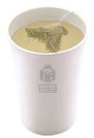
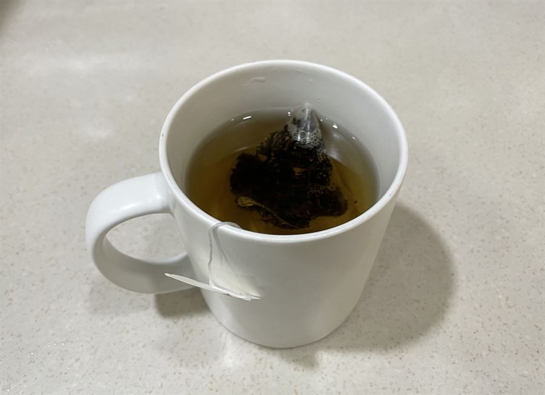

| 메뉴명 | 얼그레이 / 캐모마일 티 HOT |
|---|---|
| 판매가격 | 4,000원 |
| 원재료 | 얼그레이티 또는 캐모마일티, 뜨거운물 |
| 사용 부자재 | 13oz 머그컵 또는 종이컵, 리드뚜껑, 홀더 |
※ 픽업 멘트 : "뜨거우니 조심하세요"
※ 일회용컵 사용 시, 컵 가장자리 홈에 티 라벨을 꽂은 뒤, 리드 뚜껑을 덮어 제공한다.
제조방법

1
13온스 머그컵 또는 종이컵에 뜨거운물 250g을 담는다.
13온스 머그컵 또는 종이컵에 뜨거운물 250g을 담는다.

2
티백 1개를 꽂아 1분간 우려낸다.
티백 1개를 꽂아 1분간 우려낸다.

3
완성!! 종이컵일 경우, 홀더를 끼우고 리드뚜껑을 덮어 제공한다.
완성!! 종이컵일 경우, 홀더를 끼우고 리드뚜껑을 덮어 제공한다.